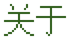

ABOUT ME
ABOUT ME
我是清羽墨染。白天写代码，晚上写字和拍照，偶尔修修这个博客。这里不放简历，只放一些和「我这个人」有关的东西。



ABOUT我是谁，以及这个博客怎么来的
ABOUT ME
在南方一座不算大的城市生活，做和文字、代码都沾点边的工作。
性格偏安静，不太擅长在人多的地方说话，但写在纸上还算条理清楚。所以有了这个博客——把想说的先写下来，剩下的慢慢再说。
2000 年前后那种个人主页，我其实是后来才在网上见到的。第一眼觉得「太吵了」，第二眼就开始一张张截图存下来。
后来搭自己的博客，索性就照着那个味道做了：跑马灯、像素字、断层色带、访客计数器，该有的都摆上。但结构上没照抄——老个人主页是三栏积木，用来读文章太累了，所以文章列表和侧边栏还是老老实实的标准博客样子。
换句话说：外面是 2000 年，里面是 2026 年。
文章部分是一个 Python 文件里的正文，跑一下脚本生成静态页面，所以访问很快；留言和评论则存在云端，浏览不用登录，想发言时用一个邮箱验证码登一下就行——每句话都挂在自己的账号上，别人冒用不了。
这两样加起来就是：外面是 2000 年，里面是 2026 年。